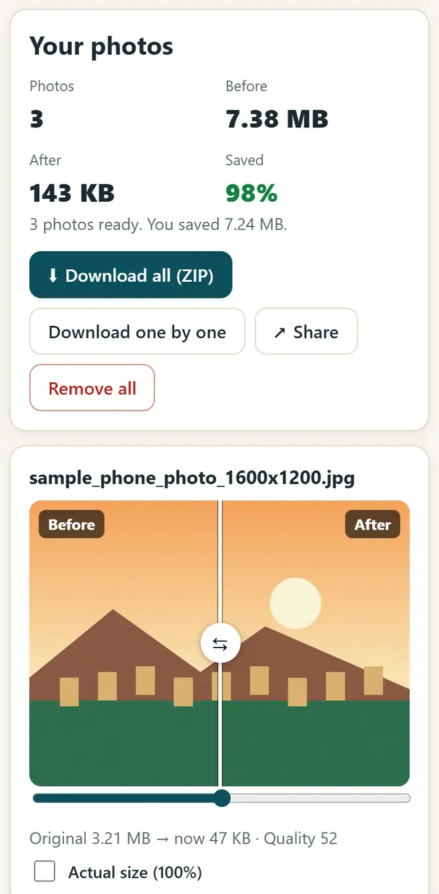

படத்தை 20 KB அல்லது 50 KB-க்குச் சுருக்குவது எப்படி
படம் 50 KB-க்குக் கீழ் இருக்க வேண்டும் என்று படிவம் சொல்கிறது; உங்கள் போன் புகைப்படமோ 3 MB. எங்கும் பதிவேற்றாமல், சில தட்டல்களில் அதை வரம்புக்குள் கொண்டுவருவது எப்படி என்று இங்கே பாருங்கள்.
சுருக்கமான பதில்
படச் சுருக்கி & அளவு மாற்றி திறந்து, “படங்களைத் தேர்ந்தெடு” அழுத்தி, அளவில் “அதே அளவு, சிறிய கோப்பு” தேர்ந்தெடுங்கள். சுருக்கத்தில் “கோப்பு அளவின்படி” தேர்ந்தெடுத்து, “அதிகபட்ச கோப்பு அளவு (KB)” இல் 20, 50 அல்லது உங்களுக்குத் தேவையான வரம்பை உள்ளிடுங்கள். வரம்புக்குள் அடங்கும் சிறந்த தரத்தைச் செயலி தேர்ந்தெடுக்கும். படத்தைப் பதிவிறக்கி அதன் அளவைச் சரிபாருங்கள்.
5 படிகளில் படத்தைச் சுருக்குங்கள்
-
படங்களைச் சேருங்கள்
படச் சுருக்கி & அளவு மாற்றி திறந்து “படங்களைத் தேர்ந்தெடு” அழுத்துங்கள். ஒரே நேரத்தில் 100 படங்கள் வரை சேர்க்கலாம்: JPG, PNG, WebP அல்லது iPhone HEIC.
-
அளவைத் தேர்ந்தெடுங்கள்
அகலமும் உயரமும் அப்படியே இருக்க “அதே அளவு, சிறிய கோப்பு” தேர்ந்தெடுங்கள். படிவம் குறிப்பிட்ட பிக்சல் கேட்டால் “சொந்த அளவு” தேர்ந்தெடுத்து அகலத்தையும் உயரத்தையும் உள்ளிடுங்கள்.
-
JPG வைத்து, கோப்பு அளவின்படி சுருக்குங்கள்
கோப்பு வகையை JPG ஆகவே வையுங்கள்: அது கிட்டத்தட்ட எல்லா இடத்திலும் ஏற்கப்படும். சுருக்கத்தில் “கோப்பு அளவின்படி” தேர்ந்தெடுங்கள்.
-
KB வரம்பை உள்ளிடுங்கள்
“அதிகபட்ச கோப்பு அளவு (KB)” இல் 20, 50, 100 அல்லது உங்கள் படிவம் அனுமதிக்கும் அளவை உள்ளிடுங்கள். செயலி பல தர நிலைகளை முயன்று, வரம்புக்குள் அடங்கும் சிறந்ததை வைத்துக்கொள்ளும். அது போதாவிட்டால் படத்தைச் சற்றுச் சிறிதாக்கவும் செய்யும்.

கோப்பு அளவின்படி சுருக்கி, வரம்பை KB-இல் உள்ளிடுங்கள். -
சரிபார்த்துப் பதிவிறக்குங்கள்
ஒவ்வொரு படத்துடனும் அதன் முன், பின் அளவு தெரியும். “முன்பு / பின்பு” பார்க்கப் படத்தைத் தட்டுங்கள். பிறகு “ஒவ்வொன்றாகப் பதிவிறக்கு” அல்லது “அனைத்தையும் பதிவிறக்கு (ZIP)” அழுத்துங்கள்.

முன்னும் பின்னும்: படங்கள் வரம்புக்குள் உள்ளன.
மிகச் சிறிய கோப்புகளுக்கான குறிப்புகள்
- 20 KB கோப்பில் அதிக நுணுக்கம் அடங்காது. முதலில் படத்தின் முக்கியப் பகுதியை வெட்டுங்கள் அல்லது குறைந்த பிக்சல் அளவைத் தேர்ந்தெடுங்கள்: அதே KB-இல் படம் இன்னும் தெளிவாகத் தெரியும்.
- PNG-ஐ KB வரம்புக்குச் சுருக்க முடியாது. JPG தேர்ந்தெடுங்கள்; இணையதளம் ஏற்றால் WebP.
- குறிப்பிட்ட பிக்சல், KB வரம்பு, DPI கேட்கும் தேர்வு, வேலை படிவங்களுக்கு படிவப் புகைப்படம் & கையொப்பம் அளவாக்கி இன்னும் எளிது: படிவ அளவுகள் அதில் முன்பே உள்ளன.
- படத்துக்குப் பதில் சிறிய PDF வேண்டுமா? PDF சுருக்கம் & JPG-இலிருந்து PDF பயன்படுத்துங்கள்.
புதிய இலவசக் கருவிகளும் இந்தியில் AI பாடங்களும் பெறுங்கள்
எங்கள் மின்னஞ்சல் பட்டியலில் சேருங்கள்: புதிய இலவசச் செயலிகள், புதிய வழிகாட்டிகள், AI பற்றிய இந்தி வீடியோ பாடங்கள் பற்றிய தகவல் உங்களுக்கு வரும். ஸ்பேம் இல்லை.
பெரியவர்களுக்கு (18+) மட்டும். எப்போது வேண்டுமானாலும் விலகலாம்.
இந்தக் கருவிகளை ஏன் பரிந்துரைக்கிறோம்
- அனைவருக்கும் இலவசம்: விளம்பரம் இல்லை, பதிவு இல்லை, கட்டணத் திட்டம் இல்லை.
- தனிப்பட்டது: உங்கள் கோப்புகளும் விவரங்களும் உங்கள் சொந்தச் சாதனத்திலேயே இருக்கும்.
- போன், லேப்டாப் அல்லது ஸ்மார்ட்போர்டில் இயங்கும், ஒருமுறை திறந்த பின் இணையம் இல்லாமலும்.
- தமிழ், இந்தி உட்பட 12 மொழிகளில்.
வீடியோவில் கற்க விருப்பமா? எங்கள் YouTube சேனலில் AI மற்றும் இலவசக் கருவிகள் பற்றிய இந்திப் பாடங்களைப் பாருங்கள்.
அடிக்கடி கேட்கப்படும் கேள்விகள்
புகைப்படத்தை 20 KB ஆக்குவது எப்படி?
“கோப்பு அளவின்படி” தேர்ந்தெடுத்து “அதிகபட்ச கோப்பு அளவு (KB)” இல் 20 என உள்ளிடுங்கள். படம் பெரியதாக இருந்தால், அது வரம்புக்குள் அடங்கும்படி செயலி அதன் பிக்சலையும் குறைக்கும். இன்னும் தெளிவான முடிவுக்கு முதலில் படத்தை வெட்டுங்கள் அல்லது சிறிய அளவைத் தேர்ந்தெடுங்கள்.
50 KB அல்லது 100 KB என்றால்?
அதே முறைதான்: 50 அல்லது 100 என உள்ளிடுங்கள். 5 KB முதல் எந்த வரம்பையும் உள்ளிடலாம்.
படம் மோசமாகத் தெரியுமா?
சிறிய கோப்பு என்றால் நுணுக்கம் குறையும். உங்கள் வரம்புக்குள் அடங்கும் சிறந்த தரத்தையே செயலி எப்போதும் தேர்ந்தெடுக்கும்; பதிவிறக்கும் முன் “முன்பு / பின்பு” இல் பார்த்துச் சரிபார்க்கலாம்.
என் படங்கள் பதிவேற்றப்படுகின்றனவா?
இல்லை. அவை உங்கள் உலாவிக்குள்ளேயே மாற்றப்படுகின்றன; உங்கள் சாதனத்தை விட்டு வெளியேறாது. GPS இருப்பிடம் போன்ற மறைந்த விவரங்களும் புதிய கோப்பிலிருந்து நீக்கப்படும்.
பல படங்களை ஒன்றாகச் சுருக்க முடியுமா?
முடியும், ஒரே நேரத்தில் 100 வரை. ஒவ்வொன்றாக, அல்லது எல்லாவற்றையும் ஒரே ZIP கோப்பாகப் பதிவிறக்குங்கள்.
பயனுள்ளதாக இருந்ததா?
ஒரு நண்பருக்கோ, சக ஊழியர்களுக்கோ, உங்கள் பள்ளியின் WhatsApp குழுவுக்கோ அனுப்புங்கள்.